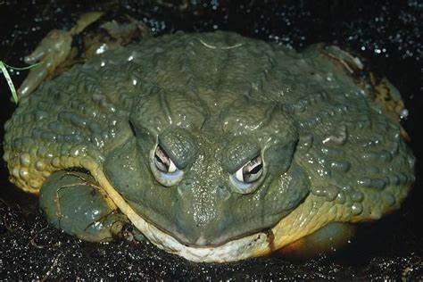

Existem menos de 70 indivíduos vivos, tornando-o o rinoceronte mais raro do mundo.
Panda vermelho

Embora seja amplamente conhecido, o panda-vermelho é uma espécie rara e ameaçada que vive nas florestas do Himalaia.
Sapo Golias
É o maior sapo do mundo, encontrado na África Ocidental, mas seu número está diminuindo devido à perda de habitat.
Ili Pika
Pica-pau-robusto
Vaquita
Lêmur-esportivo
Marmota-das-Rochosas
Tartaruga-de-espigão de Cantor
Lobo etíope